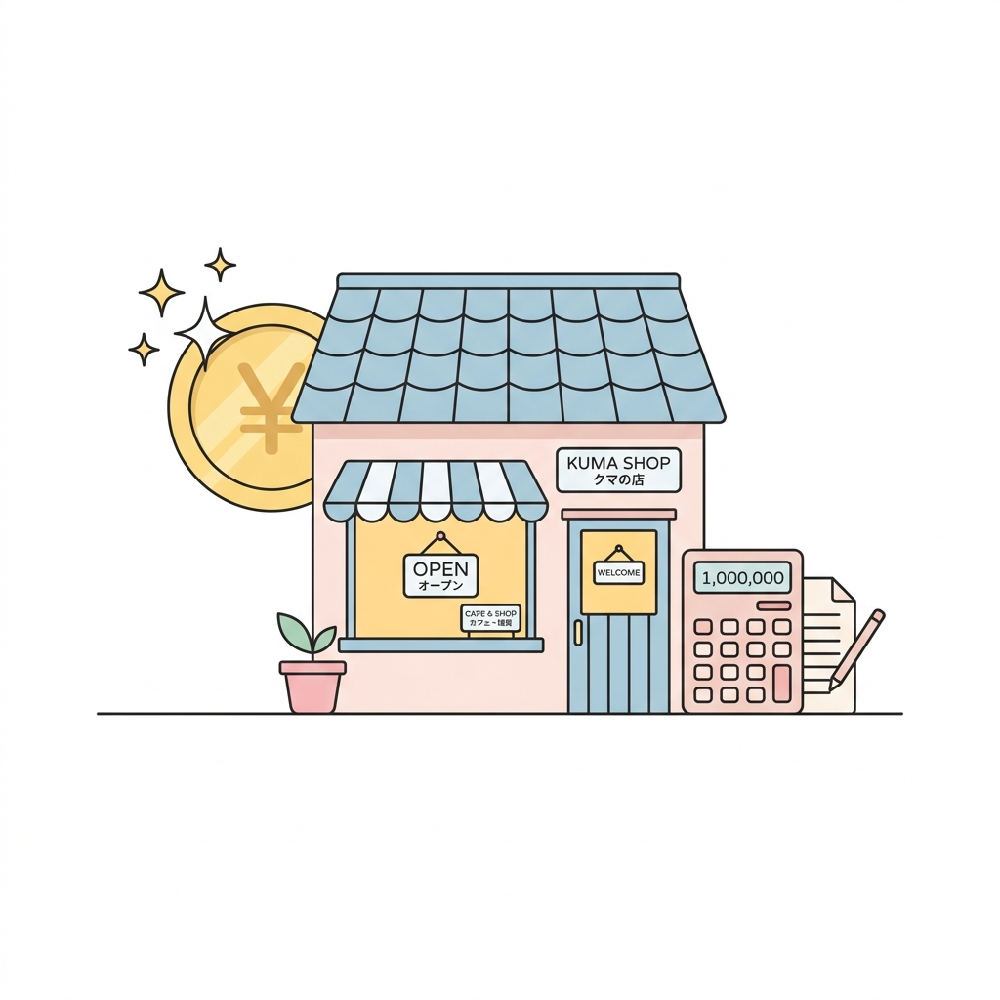
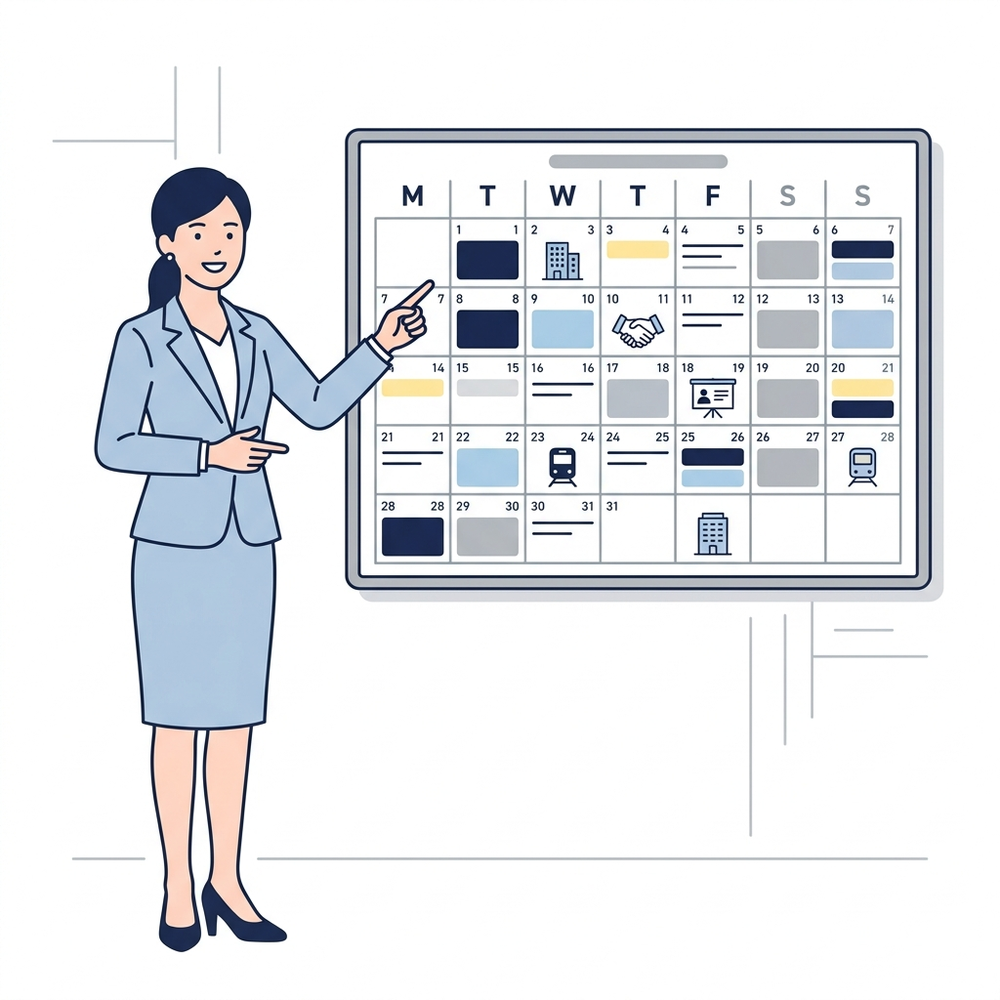

初期費用（開業費用）について

ケース 1
既存店併設の場合
180万円〜
ケース 2
一からテナントを借りる場合
平均 450万円程度
- コンパクトな物件でも開業OK！（6坪～）
- 中古機材を活用すれば、さらにコストダウン！
- 既存店舗の加盟金を含めた開業費用の平均は約400万円
- 安心安全の収益モデルとして、低ロイヤリティであり、約2年で初期投資が回収可能です。
- さらに、補助金申請のお手伝いも行うため、初期費用や運営コストの負担を大幅に軽減することも可能です。
オープンまでの流れ
最短約2ヶ月、平均約3ヶ月程度でオープンとなります。

STEP 1
問い合わせ、面談、店舗見学の実施
STEP 2
仮契約の締結
（加盟金入金・契約書提出）
STEP 3
物件探しや融資・補助金申請などの本格始動
STEP 4
本契約の締結
（諸費用入金・契約書取り交わし）
STEP 5
工事および物品購入の開始
STEP 6
本部による現地確認
（工事前・準備時の計2回必須）
最短約2ヶ月、平均約3ヶ月程度でオープン！